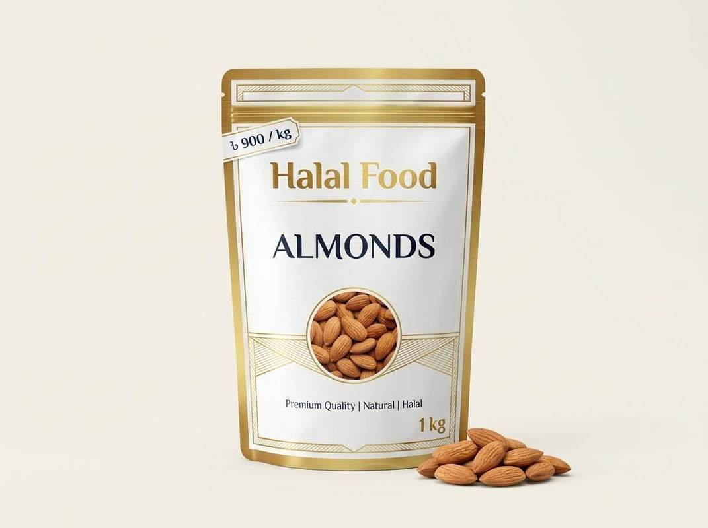

Blog / Nuts & Seeds
Almonds vs Cashews: Which Is Healthier? (Kath Badam vs Kaju Badam)

Almonds vs cashews is one of the most common questions when people buy nuts. Both are tasty, both are popular in Bangladesh, and both are full of good nutrients. But they are not the same. They differ in fibre, fat, vitamins, taste and price. In this guide, we compare almonds (kath badam) and cashew nuts (kaju badam) in a simple way, so you can choose the right one for your health, your cooking and your budget.
Quick answer: Almonds are slightly better for fibre, protein, vitamin E, calcium and heart-friendly fat. Cashews are better for zinc, iron and vitamin K, and they give a soft, creamy taste. Neither one is “bad.” The best choice depends on your goal, and a small handful of either nut is a good snack.
Almonds vs Cashews at a Glance
Approximate values for one small handful (28 g, about 1 ounce):
| Point | Almonds (Kath Badam) | Cashews (Kaju Badam) |
|---|---|---|
| Calories | About 160–170 | About 155–165 |
| Protein | About 6 g | About 4–5 g |
| Fibre | About 3.5–4 g | About 1 g |
| Total fat | About 14 g | About 13 g |
| Saturated fat | About 1 g | About 3 g |
| Carbohydrates | About 6 g | About 9 g |
| Taste and texture | Crunchy, slightly sweet, nutty | Soft, buttery, creamy |
One industry nutrition chart lists a one-ounce portion of almonds at 160 calories, 6 g protein and 4 g fibre, while cashews have 160 calories, 4 g protein and 1 g fibre. Other sources give slightly different numbers, because the exact amount changes with the nut, the roast and the way it is measured. So treat these values as a guide, not an exact rule. Source: Almond Board nutrition comparison chart.
Calories and Weight
Almonds and cashews have almost the same calories. One ounce of almonds is about 22 kernels with around 170 calories, while the same weight of cashews is about 18 nuts with around 163 calories. You also get a few more cashews than almonds in the same weight. Source: nutrition reference.
Both nuts are energy-rich, so portion size matters more than the type of nut. Neither one is a magic weight-loss food. Some people feel full for longer with almonds, because they have more protein and fibre, but this is not the same for everyone.
Protein and Fibre
Almonds are ahead here. Almonds have about the same protein as cashews per serving, but around three times more fibre. Other tables show almonds with somewhat more protein as well. Fibre helps digestion and helps you feel full, so almonds are a good pick for a long-lasting snack. Source: nutrition reference.
Fats and Heart Health
Both nuts have mostly unsaturated fat, which is the kind of fat that is better for the heart than butter or ghee in large amounts. Almonds have the better fat profile, and cashews have almost three times more saturated fat per ounce. Source: nutrition reference.
This does not mean cashews are unhealthy. It only means that if heart health is your main reason for eating nuts, almonds have a small advantage. If you eat both in small amounts, you get the benefit of both.
Vitamins and Minerals
Both nuts give magnesium, iron, copper and other useful minerals, but each one is stronger in different areas.
Almonds are better for:
- Vitamin E: A one-ounce serving of almonds gives around 45 percent of the daily vitamin E requirement. Source: nutrition reference.
- Calcium: Almonds have about six times more calcium than cashews. Source: nutrition reference.
- Fibre and riboflavin.
Cashews are better for:
- Zinc: Cashews have about double the zinc of almonds. Source: nutrition reference.
- Vitamin K: Cashews give a small amount of vitamin K, while almonds give none. Source: nutrition reference.
- Iron and copper.
Magnesium is similar in both nuts, at around 75 mg per small handful.
Carbs and Blood Sugar
Cashews have more carbohydrates than almonds, around 9 g compared with 6 g per small handful. This is still a small amount, but if you watch your blood sugar, almonds are the easier choice. If you have diabetes or any other health condition, please ask your doctor how many nuts are right for you.
Which One Should You Choose?
For daily snacking: Almonds. They are crunchy, filling and easy to carry.
For more protein and fibre: Almonds.
For a creamy taste and cooking: Cashews. Cashew paste makes gravies like korma soft and creamy, and whole cashews are lovely in polao and sweets.
For zinc and iron: Cashews add more of these minerals to your day.
For kheer, halwa and desserts: Both work well. Almonds give a crunch and cashews give a soft richness.
For kids: Both are fine in small amounts, but whole nuts are a choking risk for young children. Give them chopped nuts or nut paste, and check with your doctor if the child has any allergy.
For the best of both: Mix them. A mix of almonds and cashews gives a wider range of nutrients, and you get different tastes in one bowl. You can also see our mixed nuts and seeds collection.
Almonds vs Cashews: Price in Bangladesh
Nut prices change with the season, the grade, the origin and the seller, and they rise before Ramadan and Eid. A Bangladeshi online price list for August 2026 showed cashew nuts at about Tk 1,000 per 500 g and almonds at about Tk 740 per 500 g. So, in many cases, cashews cost more than almonds per kilogram. Source: BDStall nuts price listings.
Use these numbers only as a guide. When you compare sellers, always compare the same weight and the same grade, and check that the nuts are fresh. A very cheap pack can mean old or poorly stored nuts.
How Many Almonds or Cashews Should You Eat?
A small handful, about 28 g, is a common daily portion for most healthy adults. That is roughly 20 almonds or 15–18 cashews. Because nuts are rich in calories, it is better to measure your portion than to eat straight from a big jar.
Some people like to soak almonds overnight, because they become softer and easier to chew. This is a matter of personal choice, and the nut is good both ways.
A Quick Note on Allergies
Both almonds and cashews are tree nuts, and tree nut allergy can be serious. If you or someone in your family has a nut allergy, talk to a doctor before you eat them. Signs like itching, swelling, rash or trouble breathing after eating nuts need urgent medical help.
How to Choose and Store Fresh Nuts
When buying:
- Look for nuts with an even colour and no dark spots.
- Smell them. Fresh nuts smell mild and nutty. A sharp, oily or bitter smell means they have gone old.
- Choose clean, sealed packs with a clear weight and a packing date.
When storing:
- Keep nuts in an airtight container in a cool, dry place, away from sunlight.
- In hot and humid weather, store them in the fridge to stop the oils from going rancid.
- Use a dry spoon every time, because moisture can spoil nuts and start mould.
Frequently Asked Questions
Which is healthier, almonds or cashews?
Almonds are a little better for fibre, protein, vitamin E, calcium and fat quality. Cashews are better for zinc, iron and vitamin K. Both are healthy when eaten in small amounts.
Which has more calories, almonds or cashews?
They are almost the same. Almonds have slightly more per 28 g in many tables, but the difference is small.
Are almonds or cashews better for weight loss?
Neither is better on its own. Both are high in calories, so portion size matters. Almonds may feel more filling for some people because they have more fibre and protein.
Which is cheaper in Bangladesh, almonds or cashews?
Prices vary, but cashews are often more expensive than almonds per kg. Always compare the same grade and weight.
Can I eat almonds and cashews together?
Yes. A mix gives you a wider range of nutrients and flavours. Keep the total to a small handful a day.
Can I buy almonds and cashews online in Bangladesh?
Yes. You can order from the Halal Food Nuts and Seeds collection and get them delivered to your home.
Final Thoughts
In the almonds vs cashews question, there is no single winner. Almonds lead on fibre, vitamin E, calcium and heart-friendly fat. Cashews lead on zinc, iron and a soft, creamy taste. The healthiest choice is to eat a small handful of either nut, or both, as part of a balanced diet.
Ready to buy? Visit our Nuts and Seeds collection to choose fresh almonds and cashews for your home.